figure¶
- class alpsplot.figure.Figure(name='figure', folder_path='./output/', fig=None, ax=None, figsize=(5, 2.5), **kwargs)[source]¶
The Figure wrapper class.
- Parameters:
name (str) – Figure name used as default value of
save()andset_title().folder_path (str) – Folder path used as default value of
save(). Defaults to'./output/'.fig (Figure, optional) – The pre-defined Figure. Otherwise, call
pyplot.figure()to generate. Defaults toNone.ax (Axes, optional) – The pre-defined Axes. Otherwise, call
pyplot.figure()to generate. Defaults toNone.figsize (tuple[float, float]) – Passed to
pyplot.figure()whenfigandaxare not set. Recommend to use(5, 2.5)for singular plot and(5, 3.75)for subplots. Defaults to(5, 2.5)**kwargs – Keyword arguments passed to
pyplot.figure()whenfigandaxare not set.
- Variables:
- autolabel(rects, offset=None, above=True, fontsize=7, **kwargs)[source]¶
Call
Axes.annotate()to attach a text label above each bar inrects, displaying its height.- Parameters:
rects (BarContainer) – The bar rectangles to annotate.
offset (float) – If
None, it would be3 if above else -13. Defaults toNone.above (bool) – Whether to put the text above the rects. Defaults to
True.fontsize (int) – The fontsize of text. Defaults to
7.**kwargs – Keyword arguments passed to
Axes.annotate().
- Example:
- 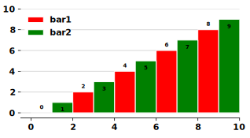
import numpy as np from alpsplot.figure import Figure fig = Figure('autolabel') fig.set_axis_lim('x', lim=(0.0, 10.0), margin=(0.5, 0.0), piece=5, _format='%d') fig.set_axis_lim('y', lim=(0.0, 10.0), margin=(0.5, 0.0), piece=5, _format='%d') x = np.arange(10, step=2) y = np.arange(10, step=2) rects1 = fig.bar(x, y, width=1, color='red', label='bar1') rects2 = fig.bar(x+1, y+1, width=1, color='green', label='bar2') fig.autolabel(rects1) fig.autolabel(rects2, above=False) fig.set_legend() fig.save(ext='.svg') # './output/autolabel.svg'
- bar(x, y, width=0.8, color='black', edgecolor='white', align='edge', linewidth=1, label=None, **kwargs)[source]¶
Call
Axes.bar()to plot bars.- Parameters:
x (numpy.ndarray) – The x array.
y (numpy.ndarray) – The y array.
width (float) – The width of the bars. Defaults to
0.8.color (str) – The colors of the bar faces. Defaults to
'black'.edgecolor (str) – Set the bar edge color. Defaults to
'white'.align (str) –
Alignment of the bars to the
xcoordinates.Possible values:
['center', 'edge']. Defaults to'edge'.'center': Center the base on the x positions.'edge': Align the left edges of the bars with thexpositions.
linewidth (float) – Width of the bar edges. If
0, don’t draw edges. Defaults to1.label (str) – Set a label that will be displayed in the legend. Defaults to
None.**kwargs – Keyword arguments passed to
Axes.bar().
- Returns:
~matplotlib.container.BarContainer – Container with all the bars and optionally errorbars.
- Example:
- 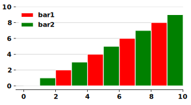
import numpy as np from alpsplot.figure import Figure fig = Figure('bar') fig.set_axis_lim('x', lim=(0.0, 10.0), margin=(0.5, 0.0), piece=5, _format='%d') fig.set_axis_lim('y', lim=(0.0, 10.0), margin=(0.5, 0.0), piece=5, _format='%d') x = np.arange(10, step=2) y = np.arange(10, step=2) fig.bar(x, y, width=1, color='red', label='bar1') fig.bar(x+1, y+1, width=1, color='green', label='bar2') fig.set_legend() fig.save(ext='.svg') # './output/bar.svg'
- curve_legend(label=None, color='black', linewidth=2, linestyle='-', markerfacecolor='white', **kwargs)[source]¶
Call
Axes.plot()to plot an empty line for legend,which is helpful for setting marker-with-line legend of
scatter().- Parameters:
label (str) – Set a label that will be displayed in the legend. Defaults to
None.color (str) – Set the color of the line. Defaults to
'black'.linewidth (str) – Set the line width in points. Defaults to
2.linestyle (str) – Set the linestyle of the line. Defaults to
'-'.markerfacecolor (str) – Set the marker face color. Defaults to
'white'.**kwargs – Keyword arguments passed to
Axes.plot().
- Returns:
~matplotlib.lines.Line2D – An invisible line object.
- Example:
- 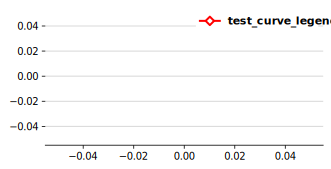
import numpy as np from alpsplot.figure import Figure fig = Figure('curve_legend') fig.curve_legend(color='red', marker='D', label='curve_legend') fig.set_legend() fig.save(ext='.svg') # './output/curve_legend.svg'
- hist(x, bins=None, density=True, facecolor='black', edgecolor='white', linewidth=1, **kwargs)[source]¶
Call
Axes.hist()to plot a histogram.- Parameters:
x (numpy.ndarray) – The x array.
bins (int | Sequence[int] | str) –
Defaults to be
None.int: it defines the number of equal-width bins in the range.Sequence: it defines the bin edges, including the left edge of the first bin and the right edge of the last bin.In this case, bins may be unequally spaced. All but the last (righthand-most) bin is half-open.
Note
If bins is:
[1, 2, 3, 4], then the first bin is[1, 2)(including 1, but excluding 2) and the second[2, 3). The last bin, however, is[3, 4], which includes 4.str: it is one of the binning strategies supported bynumpy.histogram_bin_edges:['auto', 'fd', 'doane', 'scott', 'stone', 'rice', 'sturges', 'sqrt'].
density (bool) –
Defaults to be
False. IfTrue, draw and return a probability density.Each bin will display the bin’s raw count divided by the total number of counts and the bin width:
density = counts / (sum(counts) * np.diff(bins)),so that the area under the histogram integrates to 1:
np.sum(density * np.diff(bins)) == 1.Note
If stacked is also True, the sum of the histograms is normalized to 1.
**kwargs – Keyword arguments passed to
Axes.hist().
- Returns:
~matplotlib.container.BarContainer – Container with all the bars and optionally errorbars.
- Example:
- 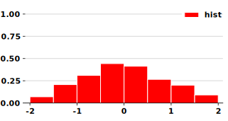
import numpy as np from alpsplot.figure import Figure fig = Figure('hist') fig.set_axis_lim('x', lim=(-2.0, 2.0), margin=(0.1, 0.1), piece=4, _format='%d') fig.set_axis_lim('y', lim=(0.0, 1.0), margin=(0.0, 0.1), piece=4, _format='%.2f') x = np.random.randn(1000) fig.hist(x, range=(-2,2), bins=8, facecolor='red', label='hist') fig.set_legend() fig.save(ext='.svg') # './output/hist.svg'
- lineplot(x, y, err=None, err_style='band', color='black', alpha=1.0, linewidth=2, linestyle='-', label=None, markerfacecolor='white', zorder=1, **kwargs)[source]¶
A similar implementation to
seaborn.lineplot(). same x value with different y values will result in the error band/bar at that x.- Parameters:
x (numpy.ndarray) – The x array.
y (numpy.ndarray) – The y array.
err (numpy.ndarray) – The x array. Defaults to
None.err_style (str) – Whether to draw the confidence intervals with translucent error bands or discrete error bars. Possible values:
['band', 'bars']Defaults to'band'.
- Parameters:
color (str) – Set the color of the line. Defaults to
'black'.alpha (float) – Set the alpha value used for blending - not supported on all backends. It must be within the 0-1 range. Defaults to
1.0.linewidth (str) – Set the line width in points. Defaults to
2.linestyle (str) – Set the linestyle of the line. Defaults to
'-'.label (str) – Set a label that will be displayed in the legend. Defaults to
None.markerfacecolor (str) – Set the marker face color. Defaults to
'white'.zorder (float) – Set the zorder for the artist. Artists with lower zorder values are drawn first. Defaults to
1.**kwargs – Keyword arguments passed to
Axes.plot().
- Returns:
list[matplotlib.lines.Line2D] – A list of lines representing the plotted data.
- Example:
- 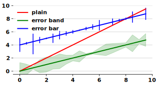
import numpy as np from alpsplot.figure import Figure fig = Figure('lineplot') fig.set_axis_lim('x', lim=(0.0, 10.0), margin=(0.5, 0.0), piece=5, _format='%d') fig.set_axis_lim('y', lim=(0.0, 10.0), margin=(0.5, 0.0), piece=5, _format='%d') x = np.arange(10, step=0.5) y = np.arange(10, step=0.5) fig.lineplot(x, y, color='red', label='plain') x_err = np.concatenate((x, x, x)) noise = np.random.randn(20) y_mean = y / 2 y_err = np.concatenate((y_mean-noise, y_mean, y_mean+noise)) fig.lineplot(x_err, y_err, color='green', label='error band') noise = np.random.randn(20) y_mean = y / 2 + 4 y_err = np.concatenate((y_mean-noise, y_mean, y_mean+noise)) fig.lineplot(x_err, y_err, color='blue', label='error bar', err_style='bars') fig.set_legend() fig.save(ext='.svg') # './output/lineplot.svg'
- save(path=None, folder_path=None, filename=None, name=None, ext='.pdf', dpi=100, bbox_inches='tight', pad_inches=0.0, **kwargs)[source]¶
Class methods are similar to regular functions.
- Parameters:
path (str, optional) – The file path to save the figure. Defaults to
f'{folder_path}/{filename}'.folder_path (str, optional) – Called when
pathisNone. Defaults tofolder_path.filename (str, optional) – Called when
pathisNone. Defaults tof'{name}{ext}'.name (str, optional) – Called when
pathisNone. Defaults toself.name.ext (str) – Called when
pathisNone. Defaults to'.pdf'.dpi (int) – Passed to
Figure.savefig(). Defaults to100.bbox_inches (str) – Passed to
Figure.savefig(). Defaults to'tight'.pad_inches (float) – Passed to
Figure.savefig(). Defaults to0.0.**kwargs – Keyword arguments passed to
Figure.savefig().
- Example:
- 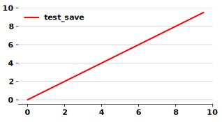
import numpy as np from alpsplot.figure import Figure fig = Figure('save') fig.set_axis_lim('x', lim=(0.0, 10.0), margin=(0.5, 0.0), piece=5, _format='%d') fig.set_axis_lim('y', lim=(0.0, 10.0), margin=(0.5, 0.0), piece=5, _format='%d') x = np.arange(10, step=0.5) y = np.arange(10, step=0.5) fig.lineplot(x, y, color='red', label='save') fig.set_legend() fig.save(ext='.svg') # './output/save.svg'
- scatter(x, y, color='black', linewidth=2, marker='D', facecolor='white', label=None, curve_legend=False, zorder=3, **kwargs)[source]¶
Call
Axes.scatter()to plot scatters.- Parameters:
x (numpy.ndarray) – The x array.
y (numpy.ndarray) – The y array.
color (str) – Set the color of the line. Defaults to
'black'.linewidth (str) – Set the line width in points. Defaults to
2.marker (str) – The marker style. Defaults to
'D'.facecolor (str) – Set the marker face color. Defaults to
'white'.label (str) – Set a label that will be displayed in the legend. Defaults to
None.curve_legend (bool) – Whether the legend contains a line around the marker. Defaults to
False.zorder (float) – Set the zorder for the artist. Artists with lower zorder values are drawn first. Defaults to
3.**kwargs – Keyword arguments passed to
Axes.scatter().
- Returns:
~matplotlib.collections.PathCollection – A collection of Paths.
- Example:
- 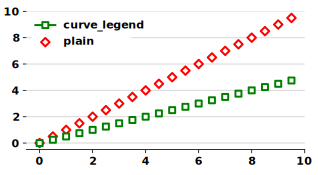
import numpy as np from alpsplot.figure import Figure fig = Figure('scatter') fig.set_axis_lim('x', lim=(0.0, 10.0), margin=(0.5, 0.0), piece=5, _format='%d') fig.set_axis_lim('y', lim=(0.0, 10.0), margin=(0.5, 0.0), piece=5, _format='%d') x = np.arange(10, step=0.5) y = np.arange(10, step=0.5) fig.scatter(x, y, color='red', label='plain') fig.scatter(x, y/2, color='green', label='curve_legend', marker='s', curve_legend=True) fig.set_legend() fig.save(ext='.svg') # './output/scatter.svg'
- set_axis_label(axis, text, **kwargs)[source]¶
Call
Axes.set_xlabel()orAxes.set_ylabel().- Parameters:
axis (str) – The axis to set label. Possible values:
['x', 'y', 'z'].text (str) – The text of axis label.
**kwargs – Keyword arguments passed to
Axes.set_xlabel()orAxes.set_ylabel().
- Returns:
~matplotlib.text.Text – The matplotlib text instance representing the axis label.
- Example:
- 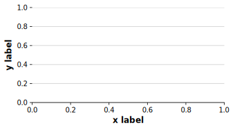
import numpy as np from alpsplot.figure import Figure fig = Figure('set_axis_label') fig.set_axis_label('x', 'x label') fig.set_axis_label('y', 'y label') fig.save(ext='.svg') # './output/set_axis_label.svg'
- set_axis_lim(axis, labels=None, lim=(0.0, 1.0), margin=0.0, piece=10, _format=None, **kwargs)[source]¶
Set ticks and their labels for axis.
set_limset_ticksset_ticklabelsset_lim(lim[0] - margin[0], lim[1] + margin[1]) set_ticks(lim[0], lim[0] + , , lim[1]) if labels is not None: set_ticklabels(labels, **kwargs) elif _format is not None: format_str =
ticker.FormatStrFormatter(_format)Axis.set_major_formatter(format_str)- Parameters:
axis (str) – The axis to set label. Possible values:
['x', 'y', 'z'].labels (list[str]) – The text of axis tick labels. Defaults to
None.lim (tuple[str, str]) – The limit of axis ticks. Defaults to
(0.0, 1.0).margin (float | tuple[str, str]) – The margin at head and tail of axis ticks. Defaults to
0.0.piece (int) – The number of axis ticks - 1. The interval among ticks are . Defaults to
10._format (str) – The format of tick labels used in
ticker.FormatStrFormatter(e.g., ‘%.1f’ or ‘%d’). Defaults toNone.**kwargs – Keyword arguments passed to
Axes.set_xticklabels()orAxes.set_yticklabels().
- Example:
- 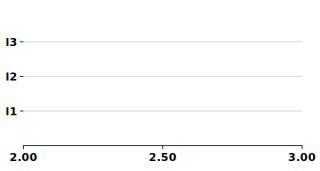
import numpy as np from alpsplot.figure import Figure fig = Figure('set_axis_lim') fig.set_axis_lim('x', lim=(2.0, 3.0), piece=2, _format='%.2f') fig.set_axis_lim('y', labels=['l1', 'l2', 'l3'], lim=(0.0, 4.0), margin=(2.0, 2.0), piece=2, _format='%d') fig.save(ext='.svg') # './output/set_axis_lim.svg'
- set_legend(*args, frameon=None, framealpha=1.0, edgecolor='none', **kwargs)[source]¶
Call
Axes.legend()to set legend ofself.ax.- Parameters:
*args – Passed to
Axes.legend().frameon (bool) – Whether the legend should be drawn on a patch (frame). Defaults to
rcParams["legend.frameon"]=True.framealpha (float) – The alpha transparency of the legend’s background. If shadow is activated and framealpha is None, the default value is ignored. Defaults to
0.0.edgecolor (str) – The legend’s background patch edge color. Defaults to
'none'.**kwargs – Keyword arguments passed to
Axes.legend().
- Returns:
~matplotlib.legend.Legend – The matplotlib legend instance.
- Example:
- 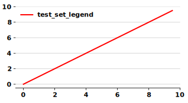
import numpy as np from alpsplot.figure import Figure fig = Figure('set_legend') fig.set_axis_lim('x', lim=(0.0, 10.0), margin=(0.5, 0.0), piece=5, _format='%d') fig.set_axis_lim('y', lim=(0.0, 10.0), margin=(0.5, 0.0), piece=5, _format='%d') x = np.arange(10, step=0.5) y = np.arange(10, step=0.5) fig.lineplot(x, y, color='red', label='set_legend') fig.set_legend() fig.save(ext='.svg') # './output/set_legend.svg'
- set_title(text=None, **kwargs)[source]¶
Call
Axes.set_title().- Parameters:
text (str, optional) – The text of title. Defaults to
self.name.**kwargs – Keyword arguments passed to
Axes.set_title().
- Returns:
~matplotlib.text.Text – The matplotlib text instance representing the title.
- Example:
- 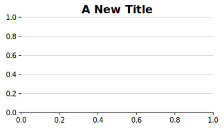
import numpy as np from alpsplot.figure import Figure fig = Figure('set_title') fig.set_title('A New Title') fig.save(ext='.svg') # './output/set_title.svg'
Linestyles¶
Linestyle |
Description |
|---|---|
|
solid line |
|
dashed line |
|
dash-dotted line |
|
dotted line |
|
draw nothing |
Markers¶
marker |
symbol |
description |
|---|---|---|
|
|
point |
|
|
pixel |
|
|
circle |
|
|
triangle_down |
|
|
triangle_up |
|
|
triangle_left |
|
|
triangle_right |
|
|
tri_down |
|
|
tri_up |
|
|
tri_left |
|
|
tri_right |
|
|
octagon |
|
|
square |
|
|
pentagon |
|
|
plus (filled) |
|
|
star |
|
|
hexagon1 |
|
|
hexagon2 |
|
|
plus |
|
|
x |
|
|
x (filled) |
|
|
diamond |
|
|
thin_diamond |
|
|
vline |
|
|
hline |
|
|
tickleft |
|
|
tickright |
|
|
tickup |
|
|
tickdown |
|
|
caretleft |
|
|
caretright |
|
|
caretup |
|
|
caretdown |
|
|
caretleft (centered at base) |
|
|
caretright (centered at base) |
|
|
caretup (centered at base) |
|
|
caretdown (centered at base) |
|
nothing |
|
|
nothing |
|
|
|
Render the string using mathtext.
E.g |
|
A list of (x, y) pairs used for Path vertices. The center of the marker is located at (0, 0) and the size is normalized, such that the created path is encapsulated inside the unit cell. |
|
path |
A |
|
|
A regular polygon with |
|
|
A star-like symbol with |
|
|
An asterisk with |


{kind=link}
{kind=link}
{kind=link}
{kind=link}
{kind=link}
{kind=link}
{kind=link}
{kind=link}
{kind=link}
{kind=link}
{kind=link}